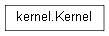

kernel¶

API¶
- class kernel.Kernel¶
The Kernel class is the core of the Majordom system. It is its only immutable class: every other functionalities are implemented by plugins.
It is instantiated once at the beginning of the program and then gathers every handleable object in different lists, in order to make them accessible by other parts of the program (such as the User Interface):
Variables: - protocols – (models.Protocol list) the list of protocols currently handled by the kernel
- drivers – (models.Driver list) the list of hardware parts that may work with the system
- interfaces – (models.Interface list) the list of available interfaces (http...)
- device_models – (models.DeviceModel list) the list of device models available. This list allows the user to know which kind of devices he is able to add to Majordom.
- block_models – (models.BlockModel list) the list of block models available. This is the way for the user to know what blocks that may be used within a scenario
- devices – (models.Device list) the list of devices currently connected to the system
- actions – (models.Action list) the list of actions available and available to be used in a scenario
- infos – (models.Information list) the list of informations available and available to be used in a scenario
- scenarios – (scenario.Scenario list) the scenarios created by the user (some may not be active)
- next_scenario_id – (scenario.Scenario list) a counter of the number of the scenarios created until there: it is used to ID the scenario.
- load_plugins()¶
Loads all plugins available in the plugin package/subdirectory, i.e. instantiates an instance of the main class of the plugin. If a plugin has already been loaded, it is ignored.
- If the plugin is a protocol plugin, this function performs the following operations:
- loading of the protocol class
- loading of all the device models bundled within the protocol plugin
If the plugin is an automation plugin, it loads every of the block models bundled within the plugin.
If the plugin is either a driver or an interface plugin, it simply loads the plugin.
Note
Classes loaded through plugins are in fact singletons: they are only instantiated once by the kernel. Some kind of classes may obviously be instantiated several times in Majordom, such as the Device classes. You may have several instances of the same remote connected to Majordom: that is what Device Models are for: they are instantiated only once but allow you to instantiate the object they are ‘modelling’ (such as a Device for a Device Model or a Block for a Block Model) several times.
- add(element)¶
Adds the element given as argument to the corresponding objects list of the kernel.
It auto-detects the type of the argument given and automatically appends to one of the lists of the kernel.
Parameters: element (models.Information or models.Action or models.Device or models.Interface or models.Protocol or models.Driver or scenario.Scenario or models.BlockModel) – The element to add to the kernel Raises TypeError: if the element given as argument is of none of the types given above.
- add_new_scenario(settings, yeah_id=None, next_block_id=0, next_link_id=0)¶
Adds a new scenario to the kernel, using the settings given as argument. Other optional arguments may be given - they are only used when this function is used in the process of persistence: at restoration, we must ensure that scenarios have the same id than they had before saving.
Parameters: - settings – The settings dictionary that will be used to initialize the scenario.
- yeah_id – (optional) the id to give to the new scenario, only used in the process of persistence.
- next_block_id – (optional) used to set the next_block_id attribute of the new scenario, only used in the process of persistence
- next_link_id – (optional) sed to set the next_link_id attribute of the new scenario, only used in the process of persistence
- get_from_list(maj_id, kernel_list)¶
Returns the element whose ID is maj_id if it is in the list kernel_list. Otherwise, it returns False.
Parameters: - maj_id – the ID of the researched element
- maj_id – the list in which to look for the researched element
Returns: the researched element or False
Returntype: bool or any Majordom class
- get(maj_id)¶
Returns the element whose ID is maj_id if it is in any of the lists of the kernel.
Parameters: maj_id – the ID of the researched element Returns: the researched element or False Returntype: bool or any Majordom class
- remove_from_list(yeah_id, kernel_list)¶
Removes and returns the element whose ID is maj_id if it is in the list kernel_list. Otherwise, it returns False.
Parameters: - maj_id – the ID of the researched element
- maj_id – the list in which to look for the researched element
Returns: the researched element or False
Returntype: bool or any Majordom class
- remove(yeah_id)¶
Removes and returns the element whose ID is maj_id if it is in any of the lists of the kernel.
Parameters: maj_id – the ID of the researched element Returns: the researched element or False Returntype: bool or any Majordom class
- save()¶
(Do not use) Function written to enable persistence, i.e. capability to save and then restore the state of the Majordom system. Due to software architecture evolutions, this method has become obsolete and should therefore not be used. It will be fixed in next versions but was not a priority for the release of the 0.0.9 version.
- restore()¶
(Do not use) Similarly to the save function above, this function was written to enable persistence. Due to software architecture evolutions, this method has become obsolete and should therefore not be used. It will be fixed in next versions but was not a priority for the release of the 0.0.9 version.